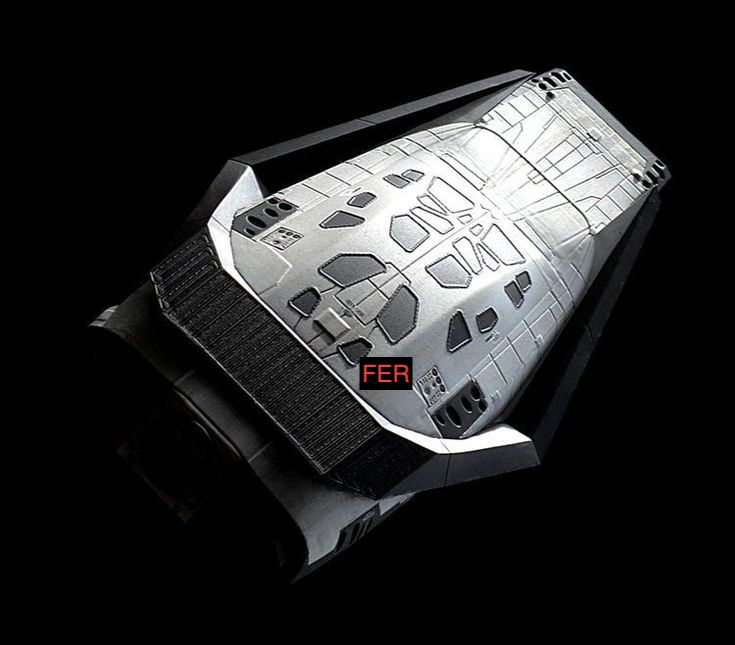

Hypherblog
Tu blog de cabecera
Este es el titulo atractivo e interesante del post
Y este es el primer párrafo de inicio donde vamos a explicar las cosas increíbles que se pueden hacer con ramas

Los blogs son la mejor forma de compartir informacion y tus ideas.Mucho mas que salir en conferencias o aparecer en Youtube. Excepto si eres un rockstar. Pero estadisticamente no lo eres...por ahora.
Suscribete y dale like